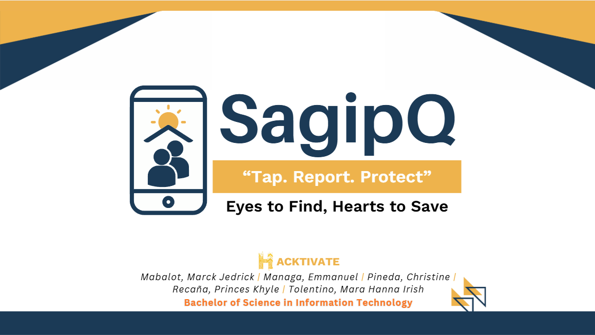
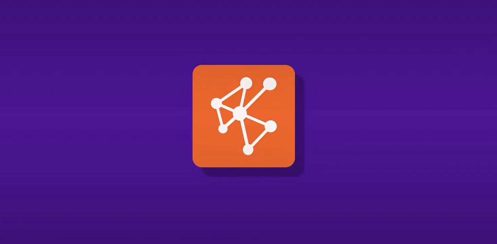
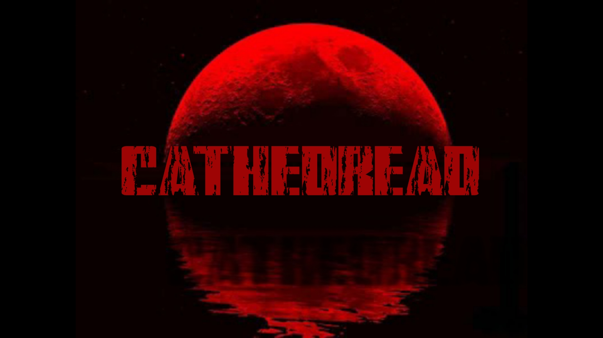
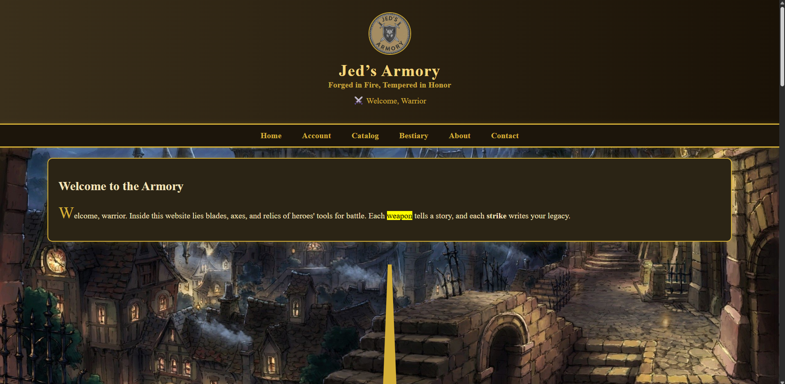
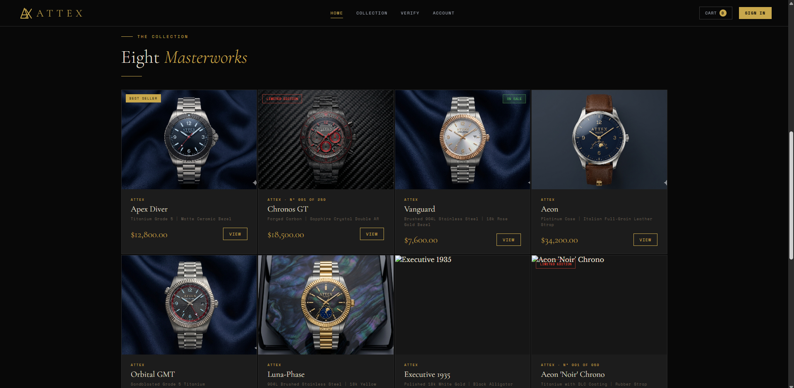
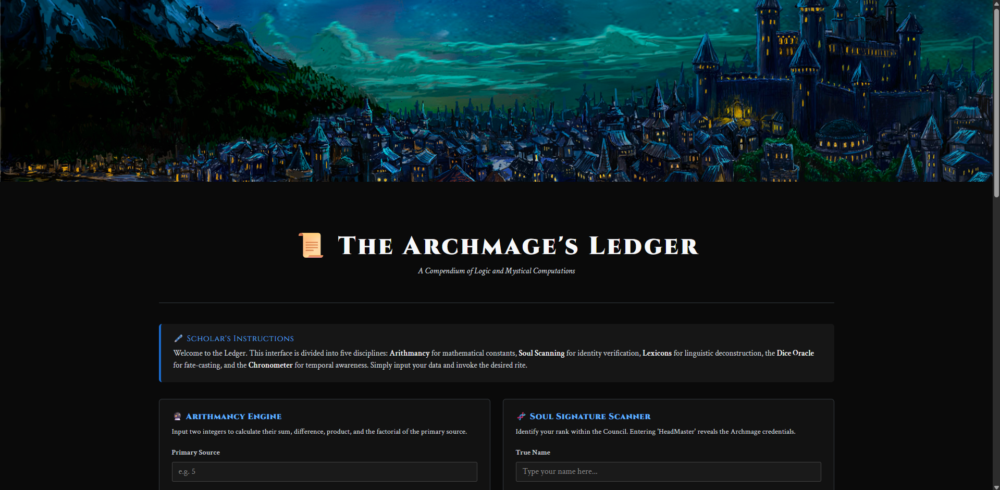
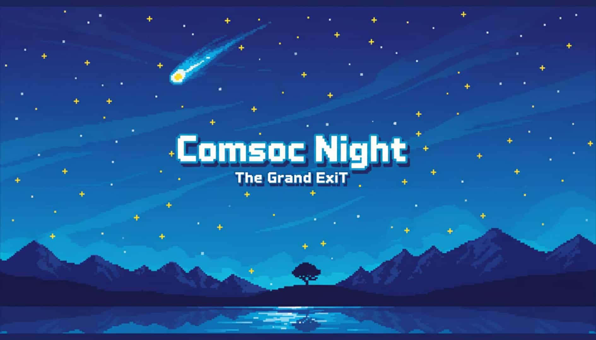
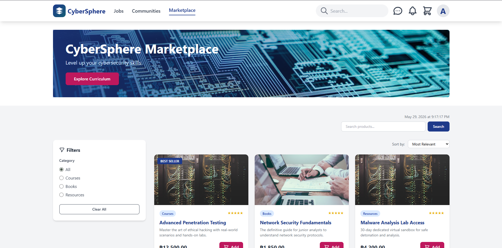

01 // Projects

AI-powered incident reporting system designed to improve emergency response and public safety.

AI-Powered Adaptive Learning System that personalizes educational content based on student performance, learning behavior, and response patterns with intelligent recommendations.

Python Pygame-based game developed as part of CP2 coursework. Implements game mechanics, collision handling, player interaction systems, and graphical interface design.

A web-based inventory and management system designed to streamline the tracking, organization, and monitoring of equipment, items, and records through a centralized digital platform with real-time operations.

A PHP e-commerce website showcasing a fictional premium watch collection — a Rolex competitor brand concept built for fun, featuring a clean collection catalog and product detail views.

A high-fantasy single-page web application blending complex data processing with an immersive interface. Built to demonstrate mastery of core OOP principles in PHP across four functional computational modules.

A Pygame recreation of how me and my girlfriend first met — a personal, heartfelt game built as a gift, recreating the magic of Comsoc Night: The Grand ExiT.

A web-based platform that combines social networking, recruitment, technical skill validation, and e-commerce into one integrated ecosystem designed for the Philippine technology and cybersecurity industry. Built to simplify how tech professionals connect with recruiters and companies.